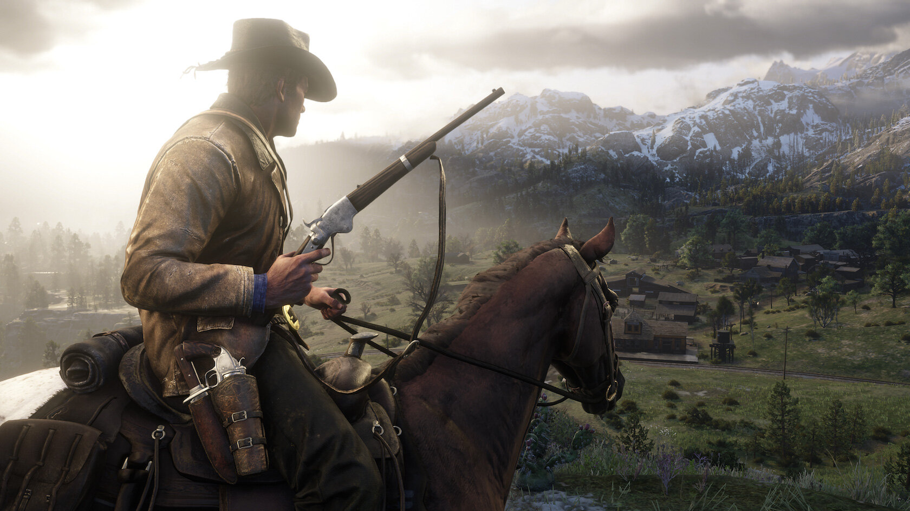
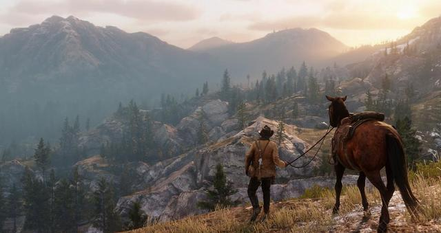
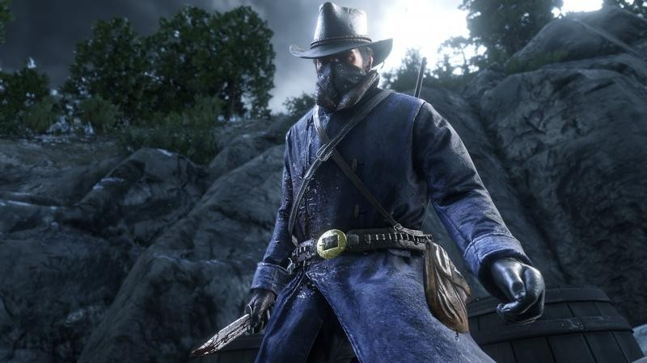
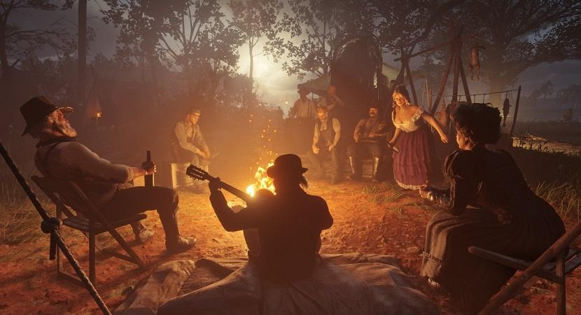
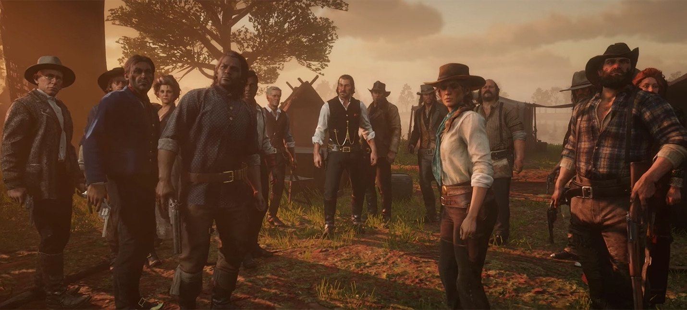

Сюжет
Компьютерная игра в жанрах action-adventure и шутера от третьего лица с открытым миром, разработанная Rockstar Studios[комм. 1] и выпущенная Rockstar Games для консолей PlayStation 4 и Xbox One 26 октября 2018 года и для персональных компьютеров под управлением Windows 5 ноября 2019 года. Является третьей игрой в серии Red Dead и приквелом к Red Dead Redemption 2010 года.
Действие Red Dead Redemption 2, оформленной в духе вестерна, происходит на территории нескольких вымышленных штатов США на рубеже XIX—XX веков. Сюжет игры построен вокруг приключений банды Датча Ван дер Линде; под управлением игрока находится один из членов банды — Артур Морган, а после прохождения сюжетной линии до эпилога — другой член банды, Джон Марстон. После неудачного ограбления парома бандиты вынуждены скрываться в глуши от федеральных агентов и охотников за головами. Red Dead Redemption 2 предлагает игроку свободно путешествовать по обширному миру игры, самостоятельно находя интересные места и занятия — к числу таких возможных занятий принадлежат перестрелки, ограбления, охота на диких животных, скачки на лошадях и нахождения коллекционных предметов (сигаретные карточки, ловля легендарных рыб/животных, кости динозавров, наскальные рисунки и т. д.). Особая система «чести», учитывающая как достойные, так и преступные поступки игрока, влияет как на сюжет игры, так и на игровой процесс. Тут кто то что то написал по ошибке
Игровой процесс
Red Dead Redemption 2 представляет собой игру в жанре action-adventure с открытым миром; игрок управляет одним персонажем с возможностью переключения камеры на вид от первого или от третьего лица по своему выбору. Игра включает в себя как однопользовательский, так и многопользовательский режимы — последний носит название Red Dead Online. На протяжении большей части сюжетной кампании однопользовательского режима игрок управляет персонажем по имени Артур Морган, членом банды Ван дер Линде; сюжетная кампания включает в себя ряд миссий — линейных сценариев с чётко поставленной целью в каждом, которые игрок должен выполнить последовательно. Вне миссий даётся возможность свободно путешествовать по обширному миру игры, самостоятельно находя интересные места и побочные задания. Игрок может вступать в сражения с врагами, используя как приёмы и оружие для рукопашного боя, так и разнообразное огнестрельное оружие и взрывчатку.
Разработка
Разработка Red Dead Redemption 2 заняла восемь лет; в то время как предыдущими играми, выпущенными Rockstar Games, занимались отдельные внутренние студии в разных странах — например, Rockstar North или Rockstar San Diego — в создании Red Dead Redemption 2 участвовали все подразделения компании по всему миру, работающие слаженно, как одна команда[12]. Она является первой игрой Rockstar Games, при создании которой разработчики изначально ориентировались на аппаратное обеспечение игровых консолей восьмого поколения[13]. Игра построена на обновлённой версии игрового движка Rockstar Advanced Game Engine[4].
Музыка
- Narrative (повествовательная) — та музыка, которая играет во время сюжетных заданий;
- Interactive (интерактивная) — музыка, играющая, когда игрок находится в открытом мире или в сетевой игре;
- Environmental (музыка окружения) — песни или музыка, которую играют персонажи непосредственно в игре.
Персонажи
Главным героем игры является член банды Датча Ван дер Линде по имени Артур Морган. Помимо Артура в банду Датча входят ещё около 20 человек, включая некоторых персонажей предыдущей игры серии, Red Dead Redemption. В эпилоге главным героем является Джон Марстон, протагонист Red Dead Redemption. Банде «Ван дер Линде» противостоят нанятые магнатом Левитом Корнуоллом агенты детективного агентства Пинкертона во главе с Эндрю Милтоном, а также бандиты из конкурирующей банды Кольма О’Дрисколла.